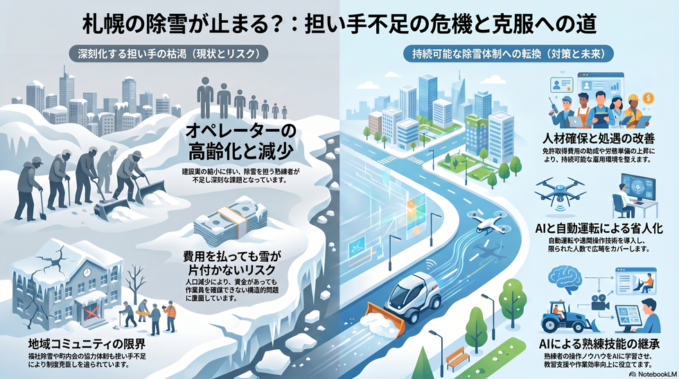

雪・寒冷地
5年以内
除雪オペレーター・地域の担い手不足
除雪を支える人材と地域協力の担い手が高齢化・減少している。

背景
除雪は機械を動かすオペレーターと、地域で排雪を担う住民・業者によって支えられている。建設業の縮小と高齢化、人口減少が重なり、費用を払っても雪を片付けられる人がいなくなる供給側のリスクが高まっている。
事実
- 除雪オペレーターの高齢化が進み、担い手不足が懸念されている。
- 札幌市は大型特殊免許の取得費用助成など除雪事業者向けの支援制度を設けている。
- 協力員のなり手不足や事業費増を背景に、福祉除雪事業の利用要件見直しが2026年度から実施される。
解釈
雪対策は機械だけでなく人と地域コミュニティに支えられている。担い手の枯渇は、費用を払っても雪が片付かない事態を招きうる供給側の構造問題である。
提案
- オペレーター育成・処遇改善の継続（労務単価上昇は費用増と表裏一体）。
- 町内会に依存した地域除排雪の仕組みの再設計。
検討体制・メンバー
札幌市建設局が事業者支援を所管する。検討会には除雪事業者・建設業協会、労働組合、職業訓練校・ハローワーク、外国人材の受け入れ支援、機械自動化の研究者、地域コミュニティ代表を含めると、人材確保と省人化の双方を扱える。
AIノート
AIの貢献度は大。自動運転・遠隔操作除雪と作業支援AIは、限られた人員で広域をカバーする鍵になる。熟練者の操作ノウハウを学習させた教習支援も有効。短期は人の補助、長期は省人化で効果が大きい。